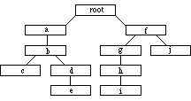
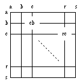

![[SGF FF[4] - Smart Game Format]](../images/head.png)
This specification is based on Appendix A (FF[1]) of Anders Kierulf's Ph.D. Thesis, and on earlier drafts by Tim Casey and Martin Müller. It keeps the game-independent spirit of the original SGF specification, but contains Go-specific properties in the main text instead of a separate section. Specifications for other games have not been attempted in this document.
I have also omitted most properties that are used only in Computer Go from this specification. A separate annotation format for computer Go test collections is in preparation.
We first define the syntax of the game collections, then discuss syntax and
semantic of various properties.

Thus the main branch of the game is stored first in the file, and programs can easily read that part (until the first closing parenthesis) and ignore the rest.
The conventions of EBNF are discussed in the literature. A quick summary:
"..." : terminal symbols
[...] : option: occurs at most once
{...} : repetition: any number of times, including zero
(...) : grouping
| : exclusive or
The overall definition of the file format is as follows:
Collection = {GameTree}.
GameTree = "(" Sequence {GameTree} ")".
Sequence = Node {Node}.
Node = ";" {Property}.
"White space" (Spaces, tabs, carriage return, line feed, line breaks, vertical tab and so on) can be inserted before the first opening parenthesis or anywhere between properties and are ignored when reading a file.
Text = { any character; "\]" = "]", "\\" = "\"}.
Real = Number ["." {Digit}].
Triple = ("1" | "2").
It is called a triple because it has three states: 0 (property does not
exist), 1 and 2.
The normal value for such properties is one, properties that are
doubled for emphasis have the value two.
Color = ("B" | "W").
The types Move and Point are game-specific. In Go, Move and Point are the same: Two lowercase letters in the range "a"-"s".

The first letter designates the column (left to right), the second the row (top to bottom). The upper left part of the board is used for smaller boards, e.g. letters "a"-"m" for 13*13. A pass move is written as "tt". The board must be quadratic, no smaller than 2*2, and no larger than 19*19.
Only upper case letters are significant in a property ID, so LB[] = LaBel[] = LdfgdfgByukyfg[] = ... Any white space characters outside of enclosing '[]' pairs are ignored. The *only* characters which matter are uppercase, '(', ')', ';', '[', ']'.
Everybody is free to define additional, private properties, as long as they do not interfere with the standard properties define in this document. Therefore, if one is writing a SGF reader, it is important to skip unknown properties. A reader may e.g. issue a warning message in such a case.
Only one of each property type is allowed per node. For example you cannot have two comments in one node:
...;C[comment1]...B[dg]...C[comment2];...This is an error. One of the comments will be lost.
Property = PropIdent PropValue {PropValue}.
PropIdent = UpperCase [UpperCase | Digit].
PropValue = "[" [Number | Text | Real | Triple | Color | Move | Point | ...] "]".
"W" : White move W[move, game-specific]
The Go-specific KO property allows to execute current move even if it is illegal. This is needed for some game records, and for computer 'what if' analysis.
"KO" : WinKo, allows to execute the current move even if it is illegal. KO[]
"AB": add black stones AB[point list]
"AW": add white stones AW[point list]
"AE": add empty = remove stones AE[point list]
"PL": player to play first PL[color]
"N" : node name N[text]
The purpose of providing both a node name and a comment is to have a short identifier like "doesn't work" or "Dia. 15" that can be displayed directly with the properties of the node, even if the comment is turned off or shown in a separate window.
There is no limit to the length of texts; programs must be able to ignore the rest of texts that are too long for them to handle. Reasonable limits are 32 characters for node names and at least 2000 characters for comments.
Inside texts, ']' and '\' are written as "\]" and "\\".
"SE" : Moves tried so far in SE[point list] self-test mode
Positive values are good for Black, negative values are good for White. The interpretation of particular values is game-specific. In Go, this is the estimated score, which might include half points, therefore I changed the parameter to real.
"CH": check mark CH[triple]
"GB": good for Black GB[triple]
"GW": good for White GW[triple]
"TE": good move (tesuji) TE[triple]
"BM": bad move BM[triple]
"DO": doubtful move (?!) DO[]
"IT": interesting move (!?) IT[]
"UC": Unclear position UC[triple]
"DM": even position DM[triple]
"HO": Hotspot node mark HO[triple]
"SI": Position marked with a sigma SI[triple]
Note: all these properties mark the whole node, not a particular place on the board.
"BL": time left for Black BL[real]
"WL": time left for White WL[real]
"OB": Number of black stones to play in this byo-yomi period OB[number]
"OM": Number of moves for each overtime period OM[number]
"OP": Length of each overtime period OP[real]
"OV": seconds of operator overhead for each move OV[number]
"OW": Number of white stones to play in this byo-yomi period OW[number]
The figure property is used to divide a game into different figures for printing: a new figure starts at the node with a figure property.
"MN": Set the current move number to number provided, used for diagrams MN[number]
"FF": file format FF[number] number = 1..3
"GM": game GM[number] (Go = 1, Othello = 2, chess = 3, Gomoku+Renju = 4, Nine Men's Morris = 5, 6: not used, Chinese chess = 7, Shogi = 8)
The game number helps a program reject games it cannot handle.
"SZ": board size SZ[number]
"BS": black species BS[number] (human=0, computer>0)
"WS": white species WS[number]
The species denotes the kind of player (the source of the moves), with different versions of computer algorithms denoted by positive numbers (default algorithm = 1).
"LT": enforces losing on time LT[]
Go-specific root properties:
"RU": Rules: "Japanese", "Chinese", "Ing", ..., default is "Japanese" RU[text]
"GN": game name GN[text]
"GC": game comment GC[text]
"EV": event (tournament) EV[text]
"RO": round RO[text]
"DT": date DT[text]
"PC": place PC[text]
"PB": Black player name PB[text]
"PW": White player name PW[text]
"BT": Team of black player BT[text]
"WT": Team of white player WT[text]
"RE": result, outcome RE[W|B+#.#|T|R|F]
"US": user (who entered the game) US[text]
"TM": time limit per player TM[text]
"SO": source (book, journal, ...) SO[text]
"AN": Who analyzed the game AN[text]
"CP": Copyright on game comments CP[text]
"ID": The game ID ID[text]
"ON": The opening played ON[text]
Additional game info properties are defined for Go:
"BR": Black player rank BR[text]
"WR": White player rank WR[text]
"HA": handicap HA[number]
"KM": komi KM[real]
The format for game-info texts is free, but it is recommended to adhere to the style guide.
"SL": selected points SL[point list]
"MA" : points marked with cross MA[point list]
"TR" : points marked with triangles TR[point list]
"CR" : Circle marker CR[point list]
Other position annotations:
"LB" : labels on points LB[point:label list]
More info on labels.
"TB": Black territory TB[point list]
"TW": White territory TW[point list]
"TC": Territory count TC[number]
"SC": secure stones SC[point list]
"RG": region of the board RG[point list]
AB Edit: Add black stones AB[point list] AE Edit: add empty points AE[point list] AN Who did the Analysis AN[text] AW Edit: Add white stones AW[point list] B Black move B[move] BL Time left for Black, seconds BL[real] BM bad move BM[triple] BR Black's Rank BR[text] BS black species BS[number],0..human, 1-n: computer BT Team of black player BT[text] C Comment C[text] CH Check mark CH[triple] CP Copyright on game comments CP[text] CR Circle marker CR[point list] DG Diagram, for printing DG[DiaSpec] DM even position DM[triple] DO doubtful move DO[] DT Date DT[YYYY-MM-DD] EV Event (tournament) EV[text] FF File format FF[number], number = 1..4 FG figure, for printing FG[] GB Good for black GB[triple] GC Comment about the game. GC[text] GM Game type GM[number] 1: go, 2: othello, 3: chess, GN Game name GN[text] GW Something good for white GW[triple] HA Number of handicap stones HA[number], number = 1..9 HO Hotspot node mark HO[triple] ID The game ID ID[text] IT interesting move IT[] KM komi KM[real] KO WinKo, execute illegal move KO[] LB label LB[point:label list] LT Lose on Time is enforced LT[] MA Mark: crosses MA[point list] MN set move number in diagrams MN[number] N Node name N[text] OB # black stones in byo-yomi OB[number] OW # white stones in byo-yomi OW[number] OM # moves per overtime period OM[number] ON The opening ON[text] OP Length of overtime period OP[real] OV seconds overhead in byo-yomi OV[number] OW # white stones in byo-yomi OW[number] PB Black player name PB[text] PC Place PC[text] PL Player whose turn it is PL[color], 1 = Black, 2 = White PW White player name PW[text] RE Result of the game: RE[W|B+#.#|T|R|F] RG region on the board RG[point list] RO Round in tournament RO[text] RU Rules: Japanese or Chinese RU[text] SC Secure stones SC[point list] SE Moves tried in self-test SE[point list] SI Position marked with a sigma SI[triple] SL Selected points SL[point list] SO Source: book, journal,... SO[text] SZ size of the board SZ[number], number = 2..19 TB Black territory TB[point list] TC Territory count: B-W TC[number] TE Good move, tesuji TE[triple] TM Time for each player TM[text] TR Triangle markers TR[point list] TW White territory TW[point list] UC Unclear position UC[triple] US User: who entered game US[text] V Node value V[number] W White move W[move] WL Time left for White WL[real] IGS uses seconds WR White's Rank WR[text] WS white species WS[number] 0..human, 1-n: computer WT Team of white player WT[text]
HA Number of handicap stones HA[number], number = 1..9 KM komi KM[real] KO WinKo, execute illegal move KO[] RG region on the board RG[point list] RU Rules: Japanese or Chinese RU[text] SC Secure stones SC[point list] TB Black territory TB[point list] TC Territory count: B-W TC[number] TW White territory TW[point list]
Martin Müller, mueller@inf.ethz.ch